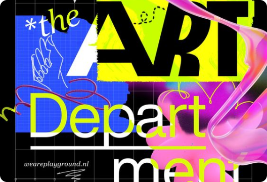
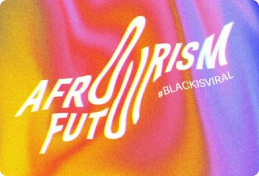

Профессия Веб-дизайнер
Научитесь создавать удобные сайты и приложения, работать с анимацией и презентовать проекты клиентам. Сможете начать карьеру в дизайне и брать первые заказы уже после 8 месяцев интенсивных занятий.
 - Веб-дизайнер проектирует сайты и приложения. Он такой же IT-специалист, как и программист. Именно он отвечает за внешний вид и удобство цифровых продуктов. Поэтому рынку нужны талантливые веб-дизайнеры, а работодатели готовы им хорошо платить.
- Будете работать над проектами из разных сфер бизнеса — и точно не заскучаете. А более опытные коллеги из вашей студии помогут отточить навыки и быстро вырасти.
- Сможете комплексно развивать цифровой продукт и улучшать опыт пользователей, опираясь на исследования. Будете строить карьеру в IT, получая все преимущества индустрии: от зарплаты до льгот.